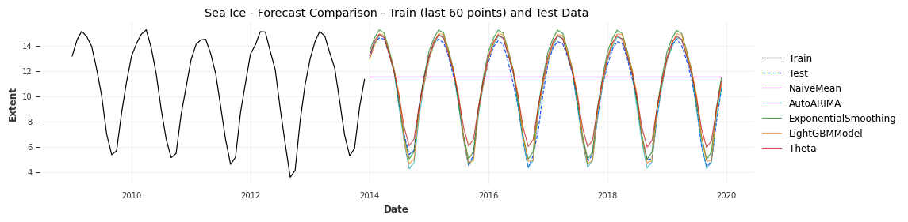

import warnings
import time
import numpy as np
import pandas as pd
import seaborn as sns
import matplotlib.pyplot as plt
from minieda import summarize # pip install git+https://github.com/dbolotov/minieda.git
from darts import TimeSeries
from darts.models import NaiveMean, AutoARIMA, ExponentialSmoothing, LightGBMModel, Theta
from darts.dataprocessing.transformers import Scaler
from darts.utils.utils import ModelMode, SeasonalityMode
from darts.metrics import mae, rmse
from sklearn.linear_model import LinearRegression
# Suppress sklearn warnings
warnings.filterwarnings("ignore", category=UserWarning, module="sklearn")
# Display and plot settings
pd.set_option("display.width", 220)
plt.rcParams.update({'font.size': 9})
# Load dataset and display first few rows
df = sns.load_dataset("seaice")
print("----- SCRIPT OUTPUT -----")
print("\n----- First Few Rows of Data -----\n")
print(df.head())
# Display summary
print("\n----- Data Summary -----\n")
print(summarize(df, include_perc=False, sort=True))
# Sort by date and set Date as index
df = df.sort_values("Date").set_index("Date")
# Resample to different frequency using linear interpolation
df_resampled = df.resample("MS").interpolate("linear") # monthly
# Drop any missing values (usually at the edges)
df_resampled = df_resampled.dropna()
# Convert to Darts TimeSeries, allowing it to infer frequency
dts = TimeSeries.from_series(df_resampled["Extent"], fill_missing_dates=True, freq=None)
# Show darts info
print("\n----- darts TimeSeries Summary -----\n")
print("frequency: ", dts.freq_str)
# Split the series into training and test sets
test_frac = 0.15
n_test = int(len(dts) * test_frac)
train, test = dts[:-n_test], dts[-n_test:]
# Confirm split sizes
print(f"Train range: {train.start_time().date()} to {train.end_time().date()} ({train.n_timesteps} steps)")
print(f"Test range: {test.start_time().date()} to {test.end_time().date()} ({test.n_timesteps} steps)")
# Normalize
scaler = Scaler()
train_scaled = scaler.fit_transform(train)
test_scaled = scaler.transform(test)
# Initialize models
models = {
"NaiveMean": NaiveMean(),
"AutoARIMA": AutoARIMA(season_length=12, max_p=2, max_q=2,
max_P=1, max_Q=1, max_d=1, max_D=1),
"ExponentialSmoothing": ExponentialSmoothing(trend=ModelMode.ADDITIVE, seasonal=SeasonalityMode.ADDITIVE,
seasonal_periods=12,damped=True),
"LightGBMModel": LightGBMModel(lags=12, output_chunk_length=1,
random_state=42, verbose=-1, force_col_wise=True),
"Theta": Theta(season_mode=SeasonalityMode.ADDITIVE),
}
# ---- TRAIN MODELS AND PREDICT ----
results = []
forecasts_test = {}
print("\n----- Training Models -----\n")
for name, model in models.items():
print(f"Training {name}...")
start_time = time.time()
# Use unscaled data for ARIMA and ExponentialSmoothing
if name in ["AutoARIMA", "ExponentialSmoothing"]:
model.fit(train)
pred_test = model.predict(n=len(test))
else:
model.fit(train_scaled)
pred_test_scaled = model.predict(n=len(test_scaled))
pred_test = scaler.inverse_transform(pred_test_scaled)
train_duration = time.time() - start_time
forecasts_test[name] = pred_test
# Evaluate on test set
results.append({
"Model": name,
"MAE": mae(test, pred_test),
"RMSE": rmse(test, pred_test),
"Train Time (s)": train_duration
})
print("\n----- EVALUATION -----\n")
# Display results
results_df = pd.DataFrame(results).sort_values("RMSE")
print(results_df.to_string(index=False))
# Plot: final 60 train + full test + predictions on test
train_to_plot = train[-60:] # last 60 points from train
plt.figure(figsize=(12, 3))
# Plot actual data
train_to_plot.plot(label="Train", linewidth=0.9)
test.plot(label="Test", linewidth=0.9, alpha=0.9, linestyle="--")
# Plot forecasts made on test set
for name, forecast in forecasts_test.items():
if forecast is not None:
forecast.plot(label=name, linewidth=0.9, alpha=0.7)
plt.title("Sea Ice - Forecast Comparison - Train (last 60 points) and Test Data")
plt.xlabel("Date")
plt.ylabel("Extent")
plt.legend(loc="center left", bbox_to_anchor=(1.0, 0.5))
plt.grid(True, alpha=0.4)
plt.tight_layout()
plt.show()----- SCRIPT OUTPUT -----
----- First Few Rows of Data -----
Date Extent
0 1980-01-01 14.200
1 1980-01-03 14.302
2 1980-01-05 14.414
3 1980-01-07 14.518
4 1980-01-09 14.594
----- Data Summary -----
dtype count unique missing zero mean std min 50% max skew
Extent float64 13175 7649 0 0 11.29 3.28 3.34 11.98 16.41 -0.44
Date datetime64[ns] 13175 13175 0 0
----- darts TimeSeries Summary -----
frequency: MS
Train range: 1980-01-01 to 2013-12-01 (408 steps)
Test range: 2014-01-01 to 2019-12-01 (72 steps)
----- Training Models -----
Training NaiveMean...
Training AutoARIMA...
Training ExponentialSmoothing...
Training LightGBMModel...
Training Theta...
----- EVALUATION -----
Model MAE RMSE Train Time (s)
AutoARIMA 0.325538 0.411305 2.388452
LightGBMModel 0.438801 0.531785 0.139075
ExponentialSmoothing 0.577775 0.667614 0.113413
Theta 0.605557 0.756212 0.006417
NaiveMean 2.937516 3.581656 0.000868